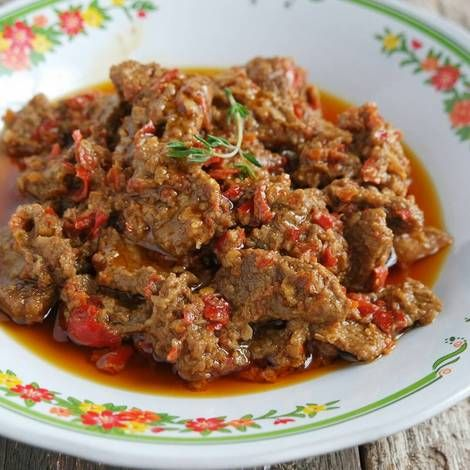

Bahan |
Cara buat
Toppa Lada

Bahan:
- 1 kg daging sapi bagian paha
- 2 lembar daun salam
- 3 lembar daun jeruk
- 1 jempol lengkuas, geprek
- 1 batang serai, geprek
- 2 sdm bubuk cabai (opsional)
- Segenggam cabai rawit merah domba utuh
- Air asam dari 1 mata asam jawa yang dicairkan
- Garam
- Kaldu jamur bubuk
- Air matang
- Minyak goreng
Bahan bumbu halus:
- 10 bawang merah
- 7 bawang putih
- 100 gram cabai merah keriting
- 3 butir kemiri utuh
Cara membuat:
- Cuci bersih daging. Potong sesuai selera.
- Panaskan sedikit minyak goreng. Tumis bumbu halus dan cabai bubuk hingga harum.
- Masukkan daun salam, daun jeruk, lengkuas dan serai. Aduk rata.
- Masukkan potongan daging. Aduk rata hingga berubah warna. Masukkan air panas hingga daging terendam.
- Aduk rata dan masak menggunakan api kecil. Aduk sesekali.
- Saat air mulai surut masukkan air asam jawa, cabai rawit domba, garam dan kaldu jamur. Aduk rata.
- Tes rasa. Masak hingga bumbu mengental. Angkat dan sajikan.
Kembali ke atas